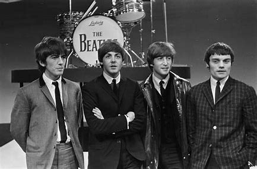
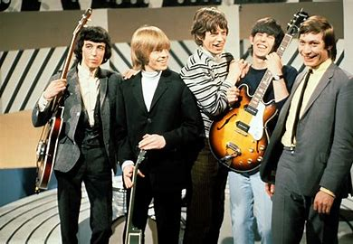
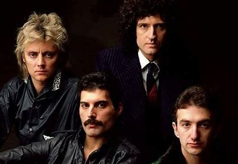

Eigenlijk is het woord legende best wel raar, want wanneer ben je nou echt een legende.
Moet je de meeste luisteraars hebben?
Moet je dood zijn om een legende te zijn?
Moet je het meeste geld verdienen in de muziekwereld?
En juist omdat dit zo een lastige vraag is om te behandelen heb ik toch besloten om de grootste bandjes die er zijn te behandelen.
Dat zijn:
The Beatles
The Beatles was een rock/popgroep uit Liverpool. De groep was actief van 1960 tot 1970 en wordt algemeen beschouwd als de invloedrijkste band uit de geschiedenis van de popmuziek. De groep bestond uit John Lennon, Paul McCartney, George Harrison en Ringo Starr. John Lennon en Paul McCartney zijn overleden en over George Harrison zijn veel thorieen, maar Ringo Starr is nogsteeds actief in de muziekwereld en er staan nog veel shows van hem geplant in 2023 in de V.S. Het meest bekende nummer van The Beatles is Hey Jude.
The Rolling Stones
De Rolling Stones bestaan uit Mick Jagger, Keith Richards, Charlie Watts en Ron Wood. Mick Jagger en Keith Richards kennen elkaar van de middelbare school als ze in 1962 in Londen een bluesgroep oprichten. In 1963 verschijnt de eerste officiële single, ‘Come On’. In datzelfde jaar breekt de groep in Groot-Brittannië door met ‘I Wanna Be Your Man’, gevolgd door de hits ‘It's All Over Now'. The Rolling Stones zijn eigenlijk de tegenpolen van The Beatles die overal in nette pakken te zien waren.
Queen
Queen is een Britse band die is begonnen in 1970 in London. De groep bestaat uit Freddie Mercury (hoofd zang, piano), Brian May (gitaar, zang), Roger Taylor (drums, zang) and John Deacon (bas). Roger Taylor is de enisgte die nogsteeds actief is in de muziekwereld. Freddy Mercury is ook de enigste die al is overleden in 1991. Deze band heeft zoveel topnummers gemaakt dat ik ze zeker niet allemaal kan opnoemen, maar een paar van hun grootste hits zijn: Bohemian Rapsody (1977) en We Will Rock You (1977).